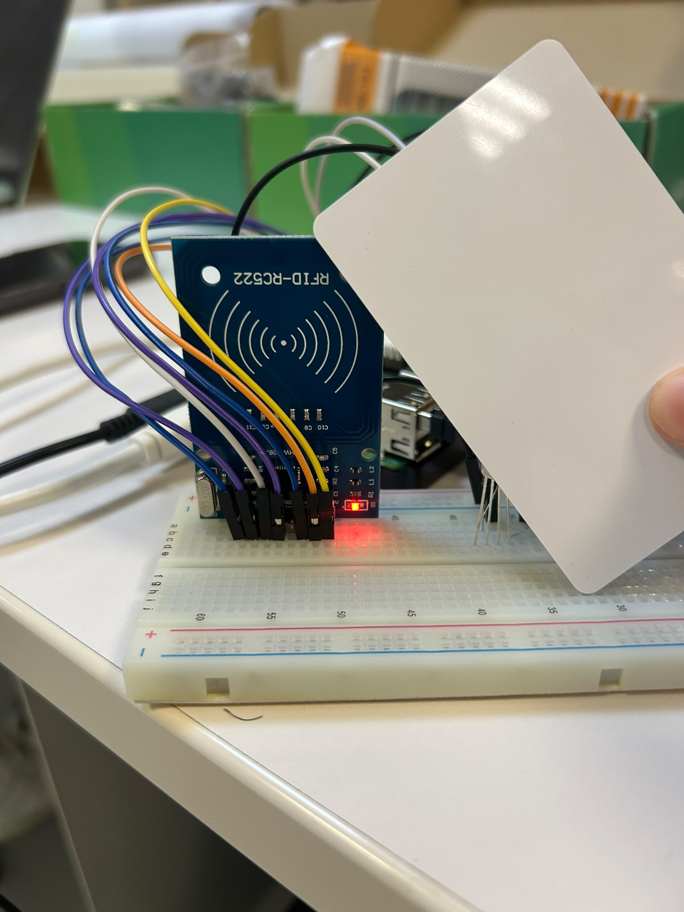
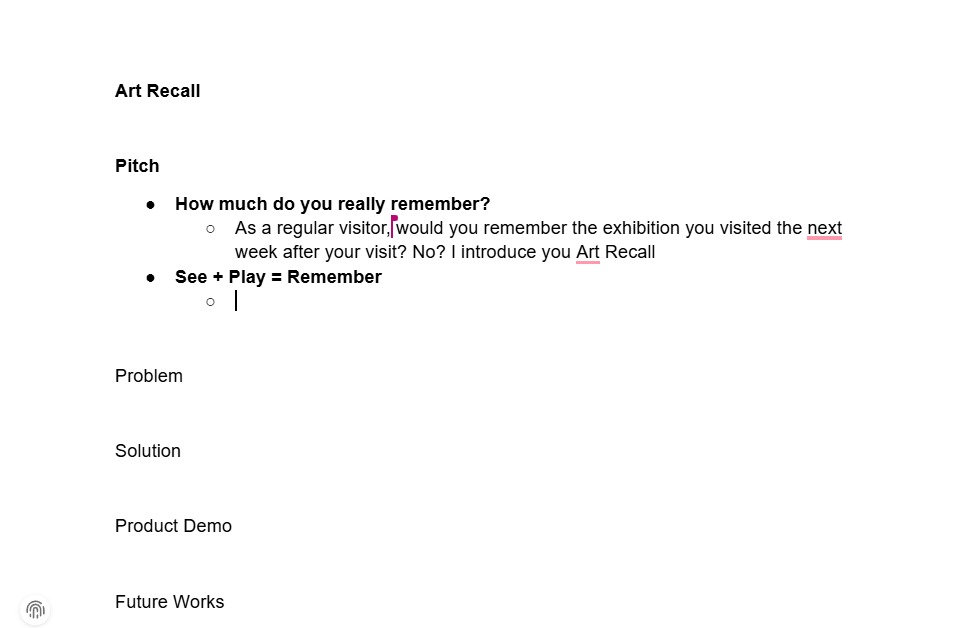
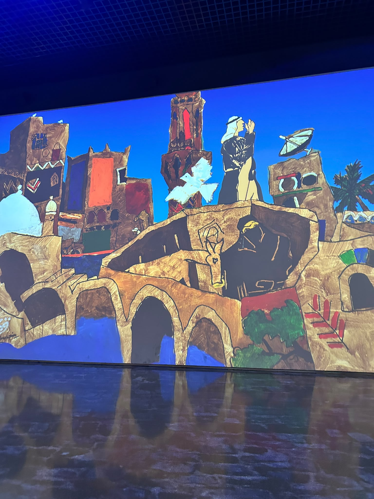
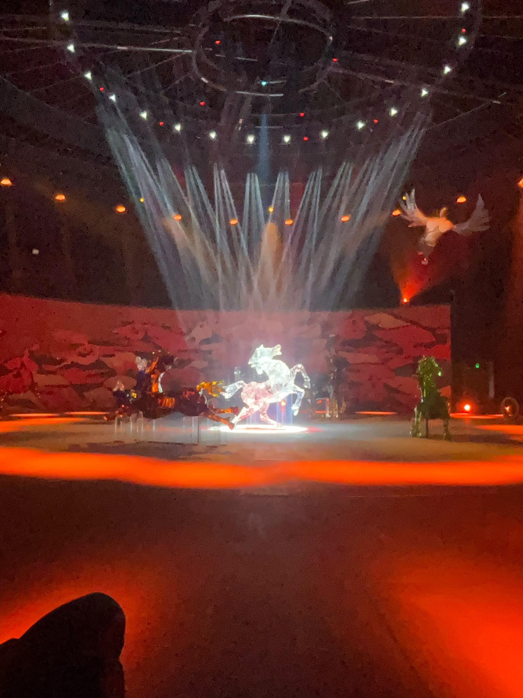

Sunday: We continued working on the Art Recall prototype by integrating the RFID sensor with the Raspberry Pi. After encountering conflicts with the GPIO pins, I moved one of the wires to a different pin to avoid the conflict. During testing, we also discovered that some of the wires were connected to the wrong pins, so I corrected their placement. We then continued testing the RFID reader to make sure it could detect a card and work together with the other hardware components of the game.

Monday: Otba and I started preparing the PowerPoint presentation for Art Recall. We discussed what information we wanted to include and decided not to make the presentation too technical, since the main purpose was to explain the idea and visitor experience clearly. We first created a Word file where we combined both of our ideas, then selected the strongest points for the presentation. From there, we started designing the slides and organizing the presentation around the problem, our solution, the prototype, and how RFID can be used to compare a visitor's first and second quiz scores.

Tuesday: We visited the Lawh Wa Qalam: M. F. Husain Museum and explored how technology was used throughout the exhibition. I observed the use of screens, projections, sound, and spotlights to create a more immersive experience, especially during the immersive show. I also noticed some accessibility issues, particularly videos without English subtitles, which made parts of the exhibition difficult to understand. Overall, I found the experience interesting and enjoyed seeing how technology was used to support M. F. Husain's artworks and stories.


Wednesday: I worked on the report for our visit to the Lawh Wa Qalam Museum and started updating my GitHub weekly report with the progress from the week. I also continued working on the script for our Art Recall presentation. Otba and I decided that he will do the first part of the presentation, while I do the demo and the future works and ideas. Moreover, we went to the What Lingers on the Artist's Mind exhibition and saw the artworks displayed. We discussed what artworks we would like to include in our future projects.